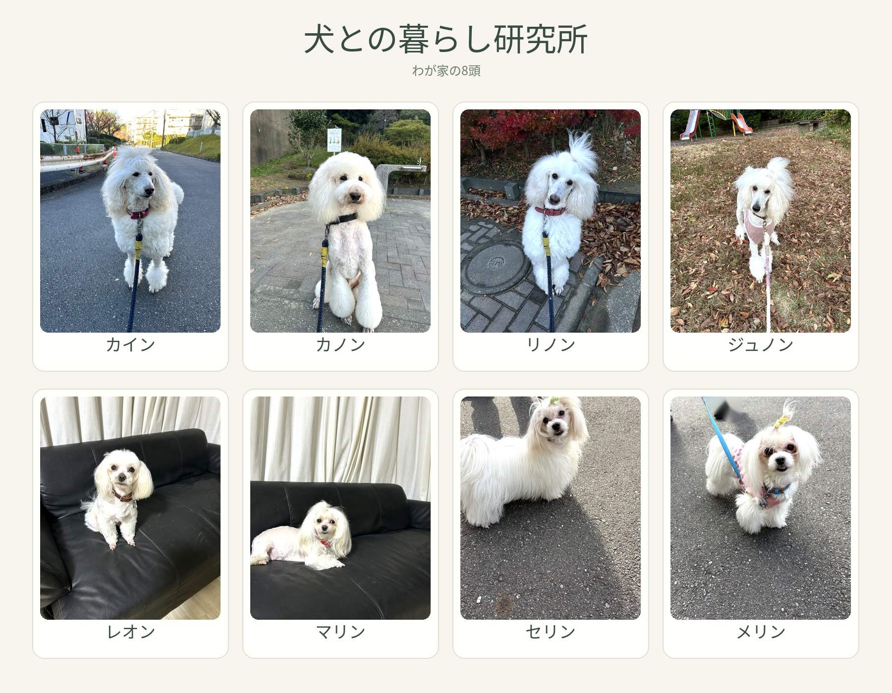

カイン
甘えん坊で、飼い主のそばにいるのが大好き。少し怖がりな一面もあります。
犬と暮らす毎日を、もっと楽しく、もっと心地よく。
8頭の犬たちとの実体験を交えながら、暮らしのヒントをお届けします。

それぞれ違う性格の、かけがえのない家族です。
甘えん坊で、飼い主のそばにいるのが大好き。少し怖がりな一面もあります。
穏やかで、自分の時間も大切にできるマイペースなタイプです。
いつもくりくりの目で見つめてくる、猪突猛進の突撃タイプです。
4頭の中でいちばん落ち着いていて、そっとそばにいてくれます。
人懐っこく、抱っこが大好きです。
元気いっぱいで、おやつが大好きです。
静かでかわいらしい、お嬢様タイプ。セリンの姉妹です。
活発だけれど、ちょっぴり鈍くさいところもある愛らしい子です。メリンの姉妹です。
これから記事を少しずつ増やしていきます。